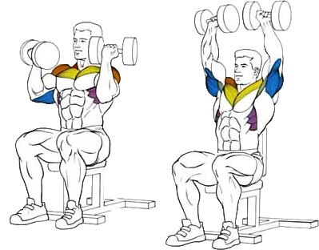

Данное упражнение является вариацией жима над головой с гантелями, но с начальной позицией рук перед собой.
Об эффективности этого жима говорит тот факт, что это было излюбленным упражнением Арнольда Шварценеггера,
который, как известно, достиг больших высот в бодибилдинге.
Сегодня упражнение «Жим Арнольда» является классикой бодибилдинга.
Исходное положение:
Сидя на скамье со строго вертикальной спинкой, плотно прижавшись к ней спиной.
Ноги согнуть в коленях под прямым углом, расставить широко и крепко упереться ступнями в пол.
Гантели поднять на уровень шеи. Локти согнуть под прямым углом.
Кисти развернуть ладонями к себе.
Техника выполнения:
На выдохе выжать гантели вертикально вверх, при этом разворачивая кисти ладонями наружу.
В верхней точке ладони должны быть направлены вперед. Сделать небольшую паузу.
На вдохе плавно вернуть гантели в исходное положение, разворачивая ладони в обратной последовательности.
Рекомендации:
Гантели рекомендуется брать более легкие, чем обычно.
В верхней точке локти не следует выпрямлять до конца: оставляйте их чуть согнутыми.
Жим выполняется плавно, желательно без паузы в нижней точке. Рывки и ускорения вызовут перенос нагрузки на позвоночник.